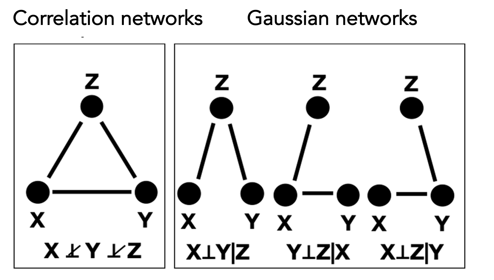

Introduction
Gaussian networks, also known as Gaussian graphical models (GGMs), are a class of probabilistic graphical models that provide a natural, graph-based framework for characterizing conditional dependencies among interacting entities in complex systems. GGMs adopt an undirected Markov graph representation, where vertices correspond to random variables assumed to follow a multivariate Gaussian distribution, and edges represent conditional dependencies between pairs of variables, quantified through nonzero partial correlations.
In contrast to correlation-based networks, which model marginal dependencies, Gaussian networks explicitly characterize the dependence between two variables while conditioning on all remaining variables in the system. This conditioning property enables GGMs to distinguish direct from indirect associations, yielding more parsimonious and interpretable network representations. As illustrated in the following figure, distinct conditional dependency structures in a Gaussian network can give rise to identical marginal correlation patterns, highlighting a fundamental limitation of correlation-based approaches. These advantages have led to the widespread adoption of Gaussian networks for inferring system-level dependency structures from high-dimensional data.

Resampling-based framework for Gaussian network inference
RSNet implements multiple resampling strategies to enhance the stability and reliability of inferred network structures. For Gaussian networks, users can choose among four general resampling approaches: (1) unstratified bootstrap, (2) unstratified subsampling, (3) stratified bootstrap, and (4) stratified subsampling, depending on data characteristics and study design. In addition, RSNet supports cluster-based resampling methods specifically designed for correlated or family-based datasets, including (1) cluster bootstrap, which samples entire clusters with replacement to preserve intra-cluster dependencies, and (2) fractional cluster bootstrap, which samples only a subset of clusters with replacement.
The overall workflow is illustrated in the following figures. Briefly, a feature-by-sample dataset is provided as input and subjected to a user-specified resampling strategy over a specified number of iterations, yielding an ensemble of resampled datasets. Each resampled dataset is then used for network structure inference, producing an ensemble of inferred networks. Finally, these networks are integrated to construct a single consensus network that serves as the basis for downstream analyses.

These procedures are implemented in the function
ensemble_ggm(), which leverages structure inference
algorithms from the SILGGM package. The resampling module
supports parallel computing, enabling efficient large-scale network
inference and ensuring scalability for high-dimensional datasets.
In the following example, we use a synthetic dataset as input and
perform bootstrap resampling (boot = TRUE) with 100
iterations (num_iteration = 100). To estimate empirical
confidence intervals for each edge, set estimate_CI = TRUE;
for improved memory efficiency, this option can be disabled
(estimate_CI = FALSE). The function
ensemble_ggm()support parallel computation through the
n_cores parameter.
data(toy_er)
ensemble_toy <- ensemble_ggm(dat = toy_er$dat, # A n x p dataframe/matrix
num_iteration = 100, # Number of resampling iteration
boot = TRUE, # If FALSE, perform sub-sampling
sub_ratio = NULL, # Subsampling ratio (0–1)
sample_class = NULL, # Optional: for stratified sampling
correlated = FALSE, # If TRUE, then clusted-based resampling is performed
cluster_ratio = 1, # Used only when `correlated = TRUE`
estimate_CI = TRUE, # If TRUE, estimate the empirical confidence interval
method = "D-S_NW_SL", # Inference method
n_cores = 1) # Number of cores for parallel computingConsensus network construction
We illustrate the consensus network construction at the single-edge level. Let denote the inferred edge between variables and in the resampling iteration. Each edge is associated with a precision (or partial correlation) estimate and its corresponding z-score .
The statistical significance of edge
in the consensus network is assessed using the average z-score
across
resampling iterations,from which a two-sided p-value is
computed. When the argument estimate_CI = TRUEis enabled in
ensemble_ggm(), the values
and
are retained for each resampling iteration, thereby enabling the
estimation of empirical confidence intervals.

The construction of the consensus network is implemented in the
function consensus_net_ggm(), which takes the output of
ensemble_ggm() as its input. Edges in the consensus network
can be filtered based on statistical significance using the
filter argument, with options including the nominal p-value
(filter = "pval"), the Benjamini–Hochberg adjusted p-value
(filter = "fdr"), or no filtering
(filter = "none"). When estimate_CI = TRUE is
specified during the ensemble_ggm() step, edges whose
empirical confidence intervals include zero are automatically excluded
from the consensus network.
consensus_toy <- consensus_net_ggm(ggm_networks = ensemble_toy, # The output of "ensemble_ggm()"
CI = 0.95, # Confidence interval
filter = "pval", # Filter method
threshold = 0.05) # Significant level of the selected filter